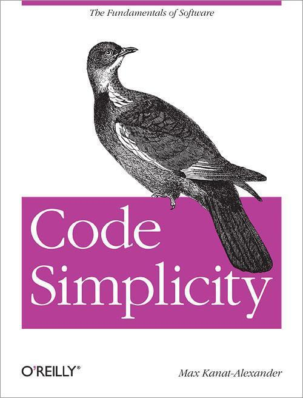
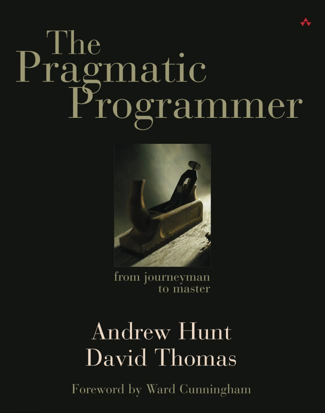
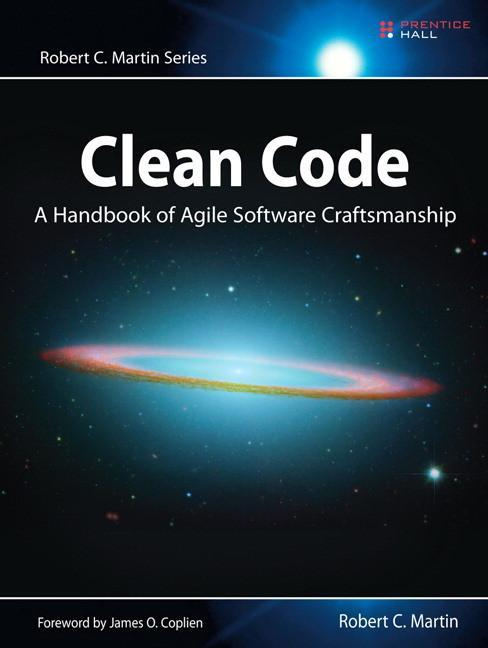
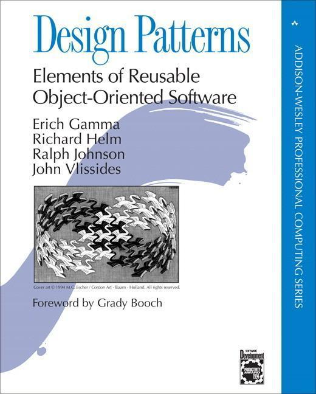
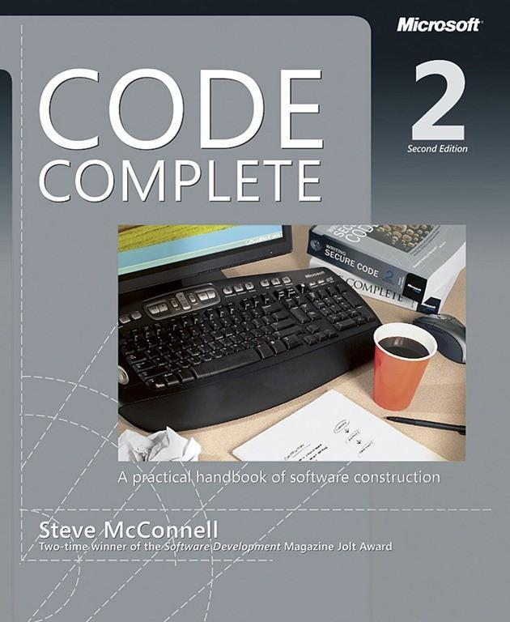

Cinco libros recomendados para mejorar como programador
Buscando recomendaciones sobre libros de programación que todo programador junior debería leer planteamos la pregunta en Genbeta Dev Respuestas . Gracias a todos los que participasteis hemos elaborado un recopilatorio ordenado esas recomendaciones para que todo desarrollador novel o senior le puede echar un vistazo y ampliar su biblioteca de referencia.
Contents
La idea tiene una motivación clara: dotar a los programadores junior de una base sólida que les permita comenzar a programar de la forma más eficiente y clara. Es importante recordar los valores de un buen programador debe tener, como bien comentaba Konaminan :
- Escribe código legible.
- Divide el sistema en partes muy especializadas y débilmente acopladas.
- Escribe pruebas automáticas.
Comenzamos con la recopilación de libros que debería leer cualquier programador junior y, por supuesto, recordar durante su carrera profesional:
Code Simplicity de Max Kanat-Alexander
El arte de la programación es reducir de la complejidad a la simplicidad. Bajo este leitmotiv este libro pretende ayudar a todos los programadores comprender el proceso de desarrollo de software y cómo estas decisiones pueden ser aplicadas a cualquier lenguaje proyecto. De esta forma marcaremos la diferencia entre escribir código que simplemente funciona a crear código legible y altamente reutilizable por el resto de programadores
Más información | Libro Code Simplicity
The pragmatic programmer, de Hunt y Thomas
A través de ejemplos, anécdotas y moraleja los autores ofrecen a cualquier programadores técnicas de cómo ser más eficientes en su trabajo y mejorar sus habilidades.
El conocido blog de Coding Horror. Os podéis hacer una idea del valor de los consejos contenidos en este valioso libro para cualquier programador.
Más información | The pragmatic programmer
Clean Code, de Rober C. Martin
Un clásico dónde los haya. Obra del tío Bob quién hace un recorrido por cómo debemos escribir código. Presta atención a los distintos puntos que resultan conflictivos. Construye una “guía de estilo”: cómo diferenciar entre el buen y mal código, cómo escribir buenos nombre de variables, métodos, clases, etc…, cómo manejar los errores de código, cómo diseñar una estrategia para aplicar TDD a nuestros desarrollos.
Más información | Libro Clean Code
Design Patterns: Elements of Reusable Object-Oriented Software
Es alucinante la cantidad de recién titulados que en una entrevista de trabajo ante la pregunta de qué patrones de diseño conoces se quedan en blanco. Sin duda el libro escrito por Erich Gamma y compañía es el libro de referencia clave para cualquier programador. Los patrones de diseño son extrapolables a prácticamente cualquier problema y lenguaje. Quizás sea más importante conocer esas nociones a la hora de escribir código que la propia sintáxis.
Más información | Libro Design Patterns: Elements of Reusable Object-Oriented Software
Code Complete 2 de Steve McConnell
Considerado ya entre los libros clásicos escrito en 1993. Toca distintos temas como definir estrategias de cómo debugear el código, testing unitario e integración. Creando una estrategia completa para programar, útil para mejorar nuestra calidad como programadores. En 2004 se editó la segunda versión con una muy buena actualización.
Más información | Libro Code Complete 2
Comentarios
Comments powered by Disqus